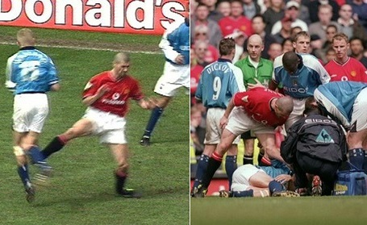
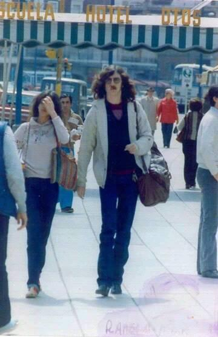
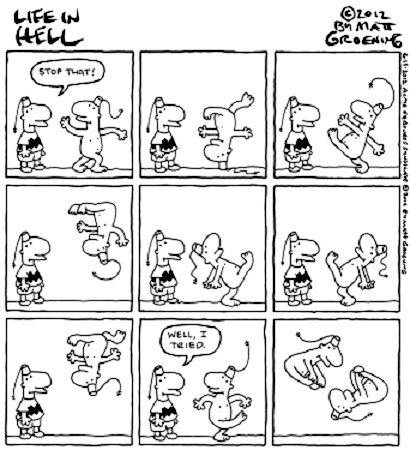

El dia que Roy Keane termino con la carrera del padre de Haaland
Historia de una venganza.
Es una historia de venganza, propia de otra época, pero que sucedió a caballo de los siglos XX y XXI: todo empieza el 27 de septiembre de 1997, en un partido entre el Manchester United y el Leeds United. El irlandés Roy Keane, jugador del United, se interna en el área rival, pero un jugador del Leeds, el noruego, Alf-Inge Haaland, se anticipa y despeja el balón. Los jugadores apenas se rozan, pero la rodilla de Keane queda atrapada en el césped y él queda tumbado en el césped, retorciéndose de dolor. Haaland interpreta que el irlandés está fingiendo y le pide a gritos que se levante, que es imposible que se haya lesionado. No era imposible. Keane no fingía. Tenía los ligamentos de la rodilla gravemente dañados y se pasó más de seis meses de baja.
Durante ese tiempo de baja, Keane rumió su venganza: no olvidó el gesto de Haaland y se prometió a sí mismo que se tomaría la venganza algún día. Lo intentó en noviembre de 1998, en otro partido entre el United y el Leeds, pero no logró ‘cazar’ a Haaland. Ese día llegó cuatro años después, el 21 de abril de 2001, hace exactamente 20 años. Haaland había abandonado Leeds (la ciudad en la que nació su hijo Erling, el delantero de moda en el fútbol europeo) para firmar por el Manchester City, que ese día visitaba Old Trafford en un derbi muy desigual. El United ya era campeón y el City se jugaba el descenso. En el minuto 86, a Keane se le escapa un balón en una jugada inocua en el centro del campo. Falla en el control y Haaland se hace con el esférico limpiamente. Pero Keane reacciona con una violencia absolutamente imprevista: se olvida del balón y clava los tacos en la rodilla derecha de Haaland con toda la intención de dañar a su rival. El árbitro le mostró la roja directa sin dudarlo. Keane se dirigió al vestuario sin protestar. Fue sancionado con tres partidos de castigo, que luego, cuando se supo la gravedad de la lesión de Haaland, se ampliaron a ocho. El City acabó bajando a Segunda división. Haaland aún jugó un partido más con el City y otro con su selección, pero tuvo que pasar por el quirófano para intentar solucionar sus problemas de rodilla. No pudo volver a jugar en la elite. Tenía 28 años.
En 2002, Keane publica sus memorias y admite que lesionó a Haaland de manera absolutamente premeditada. "Ya había esperado el suficiente tiempo. ‘Toma esto, cabrón’, pensé, ‘y nunca más vuelvas a ponerte sobre mí con cara de desprecio mientras yo estoy lesionado", le dije. La confesión de Keane generó un auténtico escándalo en Inglaterra: el Manchester City se planteó denunciar a Keane, pero la propia FA se adelantó, sancionándolo con cinco partidos y una multa –récord por entonces- de 230.000 euros, más o menos los beneficios que Keane se iba a llevar por la venta del libro. En 2005, una marca de vodka, VKD, realizó una encuesta entre 2.500 aficionados para elegir al tipo más duro de la historia del fútbol inglés. Keane, que acumuló 69 amarillas y siete rojas en su etapa en el United, fue el ganador, por delante de otros que también habían hecho méritos, como Vinnie Jones o Nobby Stiles. Después de la salvaje entrada que sufrió el 21 de abril de 2001, Haaland tuvo que resignarse a dar por concluida su etapa en el fútbol de elite. “Llevaba ocho años sin lesionarme. Aquellos fueron mis últimos 90 minutos completos. La gente puede juzgarlo como quiera. Luego me enteré que lo había hecho a propósito. Me parece un poco triste. Triste para el fútbol”, explicó posteriormente. Haaland regresó a Noruega y trabajó en el sector petrolífero. Ahora es el padre del delantero más pretendido por los grandes clubes europeos.
Fuente: www.sport.es/es/noticias/futbol-internacional/aniversario-amargo-haaland-11659251
Promesas sobre el bidet
"Por favor yo te prometo te esperaré Si es que paras de correr"
Por Ruli Roldán
Balada pop rock con aires de suspensión íntima bien New Age. Compuesta para Marisa Pederneiras "Zoca", su eterna novia brasilera. Grabada en los Estudios ION por Jorge "el portugués" Da Silva, fue el segundo simple del disco Piano Bar, editado en 1984. Inmediatamente se convirtió en un hit infaltable en sus recitales. Charly parece sentir debilidad especial por esta canción (para mi es su favorita). Tanto que en un recital, si no me equivoco en el Estadio Obras a finales de los turbulentos años '90, en medio de su interpretación se le escapó un "uhh que temazo!". García dijo alguna vez: "Para hacer un buen tema como 'Promesas...' Hace falta una brasilera divina y un bidet. Y son cosas que no están al alcance de todos".
La importancia de no llamarse Ernesto
Por Ruli Roldán
En la pintoresca villa de Stenton, vivía un hombre llamado John que se hacía pasar por Ernesto para ser más atractivo. Dos mujeres, Gwendolyn y Cecily, se enamoraron de él, creando divertidos enredos. Al final, John aprendió que la importancia de no llamarse Ernesto era valorar su verdadera identidad y ser sincero con el amor. Descubrió que ser auténtico era la clave para encontrar el amor verdadero en su vida.
En viñetas
Por MATT GROENING
Borges & Jagger
El día que Borges conoció a Mick Jagger fue un encuentro memorable y poco convencional. Sucedió en una fiesta exclusiva en un palacio de Buenos Aires. Borges, el renombrado escritor argentino, se encontraba rodeado de intelectuales y artistas, inmerso en conversaciones sobre literatura y filosofía.
De repente, un alboroto en la entrada anunció la llegada de una figura extranjera muy conocida. Era Mick Jagger, la icónica estrella del rock, quien estaba de visita en Argentina durante una gira mundial de su banda.
Borges, un hombre de vasta cultura y erudición, se sorprendió al ver a la legendaria figura del rock en medio de la reunión literaria. Pero, en lugar de mantenerse al margen, decidió acercarse a Jagger con curiosidad y respeto. Ambos se saludaron amablemente, y para sorpresa de muchos, comenzaron a charlar animadamente sobre temas diversos. Borges mostró un interés genuino en la música y las experiencias de Jagger en el escenario. Por su parte, Mick Jagger quedó fascinado por la profundidad intelectual de Borges y su perspectiva única sobre la vida y la literatura.
A lo largo de la noche, Borges y Jagger compartieron anécdotas, opiniones y risas, encontrando una extraña pero sincera conexión entre el mundo de la literatura y el rock. Fue una ocasión en la que dos mundos aparentemente dispares se entrelazaron en una conversación inolvidable. Esa noche, Borges y Jagger demostraron que la pasión por el arte y la cultura trasciende las fronteras de los géneros y las disciplinas. Su encuentro dejó una huella imborrable en ambos, y se convirtió en una leyenda en el mundo cultural de Buenos Aires. Dos leyendas, cada una en su campo, unidas por un momento único en el tiempo.